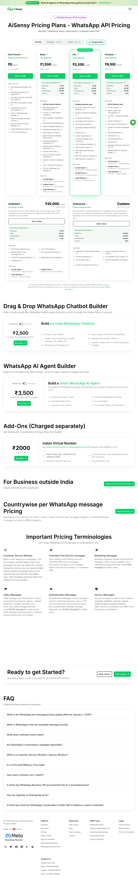
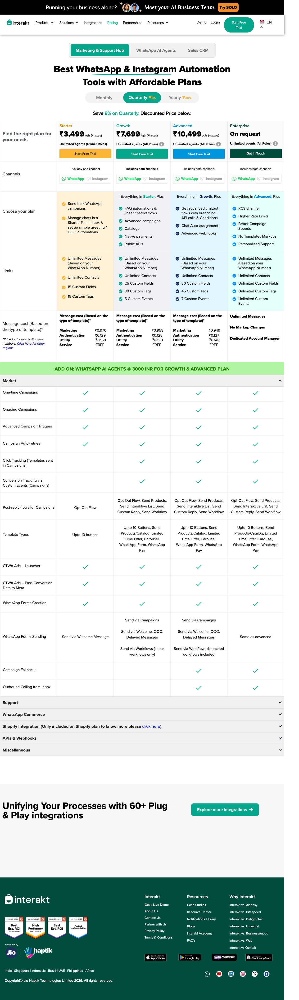
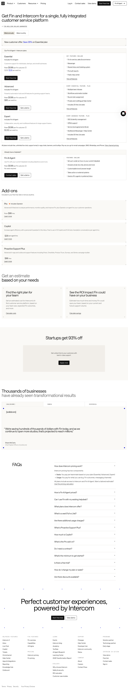
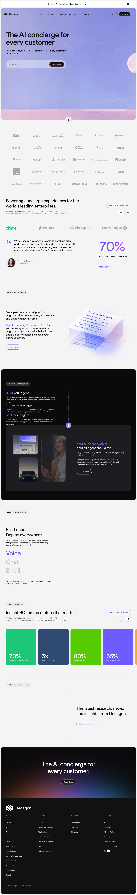
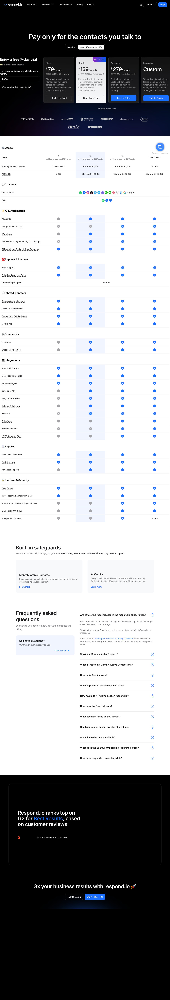

Wati · Phase 2a · Discover
Research
Twelve competitors in three groups, one benchmark dimension studied across categories, five interaction patterns and the one chosen. Every claim carries a link or a screenshot; anything unverified stays marked [?] rather than being smoothed into a confident sentence.
What could not be reached. Every in-product Administrator surface in this market sits behind a login this project does not have, so all captures are public marketing or pricing pages. Salesforce Agentforce returned HTTP 403 on both its product and pricing pages and is carried as [?] unverified rather than filled from memory. Gupshup publishes no pricing. Those gaps are visible in the tables below, not hidden.
Competitors
Set approved at the competitor gate: "remove Wati, cut soft group to Intercom, Tidio, Zendesk." Wati's own current product was proposed as a hard comparator and struck, so this research argues against the market rather than against the incumbent being replaced.
The matrix
| Product | Audience | Product core | Key mechanic | Trust | Monetization |
|---|---|---|---|---|---|
| AiSensy | Indian SMB / D2C on WhatsApp | WhatsApp campaigns + bots | Drag & drop flow builder; "AI Agent Builder" is a separate product | Meta BSP status; template approval | ₹2,500/mo builder · ₹3,500/mo AI Agent Builder · +per-message |
| Interakt | Indian SMB, Shopify-heavy | WhatsApp commerce + support | Basic [Linear Chatbot] / Advanced [Branching, Logical Flows] | Meta BSP status | ₹2,799–3,799/mo · AI Agents ₹3,000/mo add-on · ₹0.50/msg after 100 |
| Gupshup | Mid-market / enterprise, emerging markets | CPaaS + agent platform | "Autonomous AI Agents", proprietary "ACE LLM model" | Enterprise scale, named bank logos | [?] unverified — no pricing published |
| Respond.io | Mid-market omnichannel | Omnichannel inbox + workflows | Workflows + AI Agents, metered in AI Credits | SSO; explicit per-tier user counts | $79 / $159 / $279 · 5–10 users · AI included Growth+ |
| Intercom | Product-led SaaS support | AI-first support platform | Fin answers from knowledge; outcome contractually defined | Published definition + refund on reopen | $29–132/seat · $0.99 per outcome |
| Tidio | SMB ecommerce | Live chat + Lyro AI | Lyro conversations, quota-metered | "Guaranteed 50% resolution rate" — the only floor found | $24.17 → $300/mo · Lyro quotas from $32.50 |
| Zendesk | Enterprise service teams | Ticketing + AI agents | Automated resolution over a ticket model | Enterprise compliance posture | $19–115/agent · per automated resolution |
| Sierra | Enterprise CX | AI agent platform | Ghostwriter authoring; "built-in guardrails" | "Monitors" flag problematic interactions | "Outcome-based pricing"; no rate card |
| Decagon | Enterprise CX | AI concierge | Natural-language "Agent Operating Procedures" | "Watchtower — Always on QA"; simulations at scale | [?] unverified |
| Ada | Enterprise CX | AI agent platform | Playbooks + Coaching feedback loop | Simulations — "test changes safely before they go live" | [?] unverified |
| Forethought | Mid / enterprise support | AI agents over a helpdesk | Discover Agent — "detect knowledge gaps" | [?] unverified | [?] unverified |
| Agentforce | Enterprise | Agent platform | access restricted — HTTP 403 on both product and pricing pages. Not filled from memory. | ||
The evidence


Basic [Linear Chatbot] and Advanced [Branching, Logical Flows, API calls].
AI Agents are a ₹3,000/mo add-on with 100 free messages, then ₹0.50 each.
Source



Three shared market patterns
- The billable unit moved from the seat to the resolution. Intercom "$0.99 per outcome"; Zendesk "you pay only for customer requests that were successfully resolved by the AI agent"; Sierra "outcome-based pricing". Seats still exist but are no longer where value is counted.
- Everyone publishes a rate; almost nobody publishes a method. Claims run 67% (Tidio) · 70–80% (Decagon customers) · 80%+ (Zendesk) · 84% (Ada) · up to 98% (Forethought). Intercom alone defines what counts — because it bills on it.
- The improvement loop is named in the aspirational group and nameless in the hard group. Coaching, Watchtower, Monitors, Simulations, Discover Agent — against a flow builder and no vocabulary at all for "the AI got it wrong, now what".
Three real differences
- In the BSP group the AI is a second SKU bolted onto a flow-builder core. AiSensy ₹2,500 → ₹3,500; Interakt a ₹3,000/mo add-on. Intercom, Zendesk and Respond.io include it. This resolves the brief's load-bearing question, with a correction: the incumbents do have AI agents in 2026. What is fake is that AI is an upsell on a keyword-flow product, so the default the buyer already paid for is still a decision tree.
- Only one product sells a floor rather than a ceiling. Tidio's "Guaranteed 50% Lyro AI resolution rate" against "up to" everywhere else.
- Only the aspirational group lets you test before customers do. Ada's simulations, Decagon's simulations at scale, Sierra's Ghostwriter testing. Nothing in the hard group offers it.
Three questions only the product owner can answer
Baseline
What is the current blended cost per resolved conversation? The −30% criterion has no baseline without it, and no public source supplies one.
Pricing shape
Will Wati price by outcome? If yes the Administrator must be able to see what was billed, why, and contest it — a surface no hard-group competitor has.
Role reality
How many real accounts use more than Administrator + Operator? Ten roles were named at the brief gate; research cannot say which are load-bearing.
Benchmark
Dimension: proving the AI works
How a product defines a resolution, measures it, shows the Administrator what the AI got wrong, and turns that into a fix. Confirmed at the benchmark gate; time-to-live was offered as the alternative and declined.
Why this dimension. Six products claim 67–98% resolution and exactly one publishes the method. Intercom counts a confirmed resolution (the customer says it helped) or an assumed one (24 hours of disengagement), does not charge when the customer asks for a human or a Procedure fails, and refunds the resolution if the conversation is reopened. Against that published definition, independent analysis puts Fin's production rate at 45–53% [?] vendor-adjacent source, directional only. The gap between the claimed number and the real one is the design problem — and both of this product's success criteria are measurement claims that live inside it.
Criteria — each written so two people would score it the same
| # | Criterion | A 1 looks like | A 5 looks like |
|---|---|---|---|
| 1 | Success defined publicly and exactly | No success metric named | Calculation stated, including what does not count and what is reversed |
| 2 | Individual failures enumerable | Aggregate charts only | Every failure listed and openable; any cap disclosed |
| 3 | Cause visible at the failure | No reason given | Full reason or trace inline on the item |
| 4 | Testable before it affects anyone | No preview of any kind | Replayed against real history with the predicted impact diffed |
| 5 | Fix authored where the failure is seen | Read-only; fixing happens elsewhere | Fix created in place and linked to the failure |
| 6 | Regression detected automatically | Nothing notices a fixed thing breaking again | Item changes state on its own and the system notifies |
| 7 | The system verifies the fix | No verification; you assume | Explicit validate flow with named states and a verdict |
| 8 | Change history attributable | No record of who changed what | Who / what / when with before-and-after, marked on the chart |
Scoring — five products, all from outside customer service
[?] is unsourced, not zero: excluded from numerator and denominator alike, so each product reports as score / scoreable. Ranks with fewer than eight scored criteria are provisional.
| Product | Category | 1 | 2 | 3 | 4 | 5 | 6 | 7 | 8 | Total |
|---|---|---|---|---|---|---|---|---|---|---|
| LangSmith | LLM app evaluation | 4 | 5 | 5 | 5 | 3 | 4 | 4 | 4 | 34/40 |
| Stripe Radar | Payments fraud ML | 3 | 5 | 4 | 5 | 4 | 2 | 3 | 5 | 31/40 |
| Sentry | Error monitoring | 2 | 5 | ? | 1 | 2 | 5 | 4 | 4 | 23/35 |
| Search Console | Search indexing | 4 | 4 | 4 | 1 | 1 | 3 | 5 | 1 | 23/40 |
| Datadog SLOs | Observability | 5 | 2 | ? | ? | ? | 5 | 3 | ? | 15/20 |
The result that matters. The two highest scorers are both "evaluate an automated decision-maker" products — one for LLM apps, one for fraud ML. Neither is a support tool. That is the strongest available evidence that this dimension is unsolved inside this category.
Three mechanics for the MVP
- Backtest before enable — from Stripe Radar and LangSmith. Radar "runs a simulation on the last 6 months of charges to determine how many legitimate, fraudulent and blocked payments would have been affected by the rule, had it been implemented". Applied: before an Administrator changes a guardrail, knowledge item or handover rule, replay it against the last N real conversations and show which answers would have changed.
- Validate-fix with named states — from Google Search Console, whose
Validate fixrunsNot started → Started → Looking good → Passed / Failed. Applied: when the Administrator fixes a theme, the product watches subsequent real conversations and returns a verdict, instead of leaving the loop open the way the hard group does. - Automatic regression — from Sentry and Datadog. "If the same issue comes back in a newer release than the one you resolved it in, its status will automatically change to 'Regressed'." Applied: a theme the AI used to handle starts failing again → it changes state and says so.
One that will not work here
Datadog's error-budget / SLO abstraction. It tops criterion 1 and is still wrong for this product: it needs an organisation that treats a percentage as a contract and an operator fluent in "a burn rate is a unitless value [coined by Google]". This Administrator is switching BSPs because the last vendor's numbers were marketing; a second layer of vendor math is the same failure in a better chart. Worse, Datadog's own docs delegate what counts as a "good event" to the monitor configuration — the exact ambiguity that makes the market's 67–98% claims meaningless. Keep the alerting; drop the budget.
Patterns
The key interaction problem, derived from the brief: how does an Administrator find what the AI got wrong, decide it matters, and change the AI so it stops — without reading every conversation?
| # | Pattern | How it works | In the wild | Fits when | Breaks when |
|---|---|---|---|---|---|
| 1 | Queue triage | Every failure is a work item with a state; work the queue to zero | Sentry issues; Stripe's review queue; every helpdesk | Volume is bounded and each item is individually actionable | Volume is high — the queue becomes wallpaper within a week |
| 2 | Clustered themes ✓ | Failures grouped by cause; the unit of work is the theme, never the conversation | Search Console's "Why pages aren't indexed"; Sentry grouping; Discover Agent | Failures repeat and one fix serves a whole theme | Clustering is wrong — one bad group destroys trust in every group |
| 3 | Sampled audit | A sample is scored against a rubric; quality is inferred, not enumerated | Decagon's Watchtower; call-centre QA; LangSmith evaluators | You need a defensible number more than every failure | Someone wants this customer fixed — sampling cannot find them |
| 4 | Counterfactual replay ✓ | A change is evaluated against real past conversations before going live; the artifact is a diff | Radar's 6-month simulation; LangSmith experiments; Ada's simulations | Changes are risky and history exists | There is no history — day one, where the 10-minute criterion lives |
| 5 | Natural-language authoring | The operator states policy in words; the system writes the rule | Decagon's AOPs; Radar Assistant; Sierra's Ghostwriter | The operator is non-technical, the policy space open-ended | They cannot verify what was written — a legible UI becomes an opaque one |
Chosen: 2 · Clustered themes, with 4 · Counterfactual replay as the action taken from a cluster. Three reasons from the brief: (1) the Administrator is not the Operator — the brief makes the inbox "an exception surface, not the workspace", and queue triage quietly rebuilds the shared inbox it rejects. (2) Five channels — a per-item queue multiplies by channel, a theme is channel-agnostic. (3) Success is a rate, and rates do not move item by item; clustering makes the unit of work the same size as the unit of measurement.
Second choice, under condition: sampled audit, if accounts produce so many themes that the job becomes proving the number rather than fixing the tail. Disqualified: queue triage — the incumbent's shape, contradicts the brief, and fails criterion 5: you can close items forever without the system getting better.
[?] Open on the chosen pattern. The gate answer was the single
character "2" against a recommendation that bundled 2 with 4. The pairing is carried forward as
the recorded reading. Hypothesis: the human intended the recommendation as stated. To be
confirmed before /dsf:ia, since replay is a large build commitment that shapes the
main screen.
Conclusions
| Gap | Hypothesis | Follows from |
|---|---|---|
| No BSP publishes how resolution is counted | A published, conservative definition — including what does not count and what reverses on reopen — is itself a differentiator for a buyer who has been burned once | Competitors, pattern 2; Benchmark dimension |
| The market sells ceilings, not floors | This buyer will not believe a ceiling from a second vendor; a measured rate for their own account beats any claimed rate | Competitors, difference 2 |
| Nothing in the hard group can test a change before customers meet it | Counterfactual replay against the account's own history is the highest-value unbuilt mechanic in this market | Benchmark mechanic 1; Patterns 4 |
| The improvement loop has no name in the hard group | Naming the loop — theme → fix → validate → regression watch — is a product surface, not vocabulary | Competitors, pattern 3; Benchmark mechanics 2–3 |
| The brief said the incumbents' AI is fake | Partly wrong as stated; the correction is sharper — the AI exists but is an upsell on a keyword-flow core, so the paid default is still a decision tree | Competitors, difference 1 |
| No baseline exists for the −30% criterion | Only the product owner can supply it; until then the criterion is directionally right and numerically unverifiable | Competitors, open question 1 |
Hypotheses for later phases to test
- An Administrator will trust a lower number that is defined over a higher number that is claimed. — phase 2b, then phase 4.
- The theme, not the conversation, is the right unit of work for this persona. — phase 3: if the sitemap needs a per-conversation queue as a primary Administrator destination, the pattern choice was wrong.
- Replay before enable is worth its build cost to an SMB Administrator, not only an enterprise one. — phase 2b.
- The 10-minute criterion and counterfactual replay are in tension on day one: a new account has no history to replay against. — phase 3/4.
- Naming the loop is what makes the product legible as "not another WhatsApp API SaaS" — but if the vocabulary sounds like an observability tool, the anti-goal has been missed in the other direction. — phase 5.